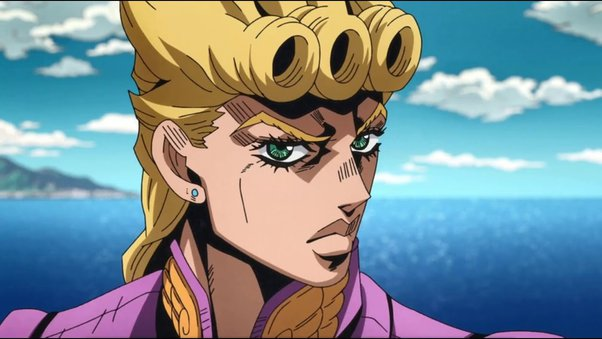

Giovanna Giorno

Summary
I may look like a quiet guy, but trust me, I’ve got big dreams—like turning a mafia organization into a community service project. I’m passionate about justice, personal growth, and occasionally punching existential threats with a golden fist. Life is my canvas, and I’m not afraid to use my Stand to add a little… flair.
Stand
Gold Experience
-
Abilities: Creates life, heals injuries, and rewrites bad vibes.
-
Special Move: “Make you rethink your life choices—literally.”
Education
Graduated with honors from the School of Hard Knocks (and Stylish Suits)
Work Experience
Boss - Passione (Reformed Mafia Edition)
March 2019 - Present
-
Successfully rebranded a criminal empire into a force for good.
-
Eliminated all “questionable” elements from the organization. (Let’s just say they’re not coming back…)
-
Recruited a loyal team of eccentric (but reliable) allies
Aspiring Gang-Star - Passione
April 2018 - March 2019
-
Climbed the ranks with charisma, resolve, and a pinch of divine intervention.
-
Survived multiple assassination attempts (and gained some great stories).
-
Made a strong impression by challenging—and dethroning—the boss.
Skills
- Turning enemies into allies (or fertilizer): ⭐️⭐️⭐️⭐️⭐️
- Turning enemies into allies (or fertilizer): ⭐️⭐️⭐️⭐️⭐️
- Keeping hair flawless in battle: ⭐️⭐️⭐️⭐️⭐️
Award and Achievements
-
Most Likely to Become a Legend (2019) – Voted unanimously by surviving Passione members.
-
Officially crowned “The Gold Standard” for leadership and fashion.
Others
hobbies
Contact